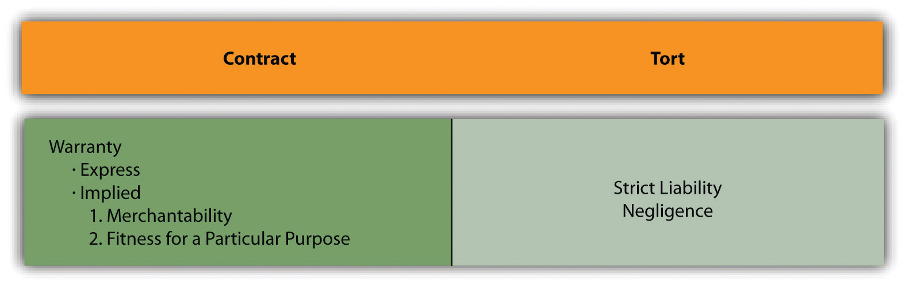

In previous chapters, we discussed remedies generally. In this chapter, we focus specifically on remedies available when a defective product causes personal injury or other damages. Products liability describes a type of claim, not a separate theory of liability. Products liability has strong emotional overtones—ranging from the prolitigation position of consumer advocates to the conservative perspective of the manufacturers.
The theory of caveat emptor—let the buyer beware—that pretty much governed consumer law from the early eighteenth century until the early twentieth century made some sense. A horse-drawn buggy is a fairly simple device: its workings are apparent; a person of average experience in the 1870s would know whether it was constructed well and made of the proper woods. Most foodstuffs 150 years ago were grown at home and “put up” in the home kitchen or bought in bulk from a local grocer, subject to inspection and sampling; people made home remedies for coughs and colds and made many of their own clothes. Houses and furnishings were built of wood, stone, glass, and plaster—familiar substances. Entertainment was a book or a piano. The state of technology was such that the things consumed were, for the most part, comprehensible and—very important—mostly locally made, which meant that the consumer who suffered damages from a defective product could confront the product’s maker directly. Local reputation is a powerful influence on behavior.
The free enterprise system confers great benefits, and no one can deny that: materialistically, compare the image sketched in the previous paragraph with circumstances today. But those benefits come with a cost, and the fundamental political issue always is who has to pay. Consider the following famous passage from Upton Sinclair’s great novel The Jungle. It appeared in 1906. He wrote it to inspire labor reform; to his dismay, the public outrage focused instead on consumer protection reform. Here is his description of the sausage-making process in a big Chicago meatpacking plant:
There was never the least attention paid to what was cut up for sausage; there would come all the way back from Europe old sausage that had been rejected, and that was moldy and white—it would be dosed with borax and glycerin, and dumped into the hoppers, and made over again for home consumption. There would be meat that had tumbled out on the floor, in the dirt and sawdust, where the workers had tramped and spit uncounted billions of consumption germs. There would be meat stored in great piles in rooms; and the water from leaky roofs would drip over it, and thousands of rats would race about on it. It was too dark in these storage places to see well, but a man could run his hand over these piles of meat and sweep off handfuls of the dried dung of rats. These rats were nuisances, and the packers would put poisoned bread out for them; they would die, and then rats, bread, and meat would go into the hoppers together. This is no fairy story and no joke; the meat would be shoveled into carts, and the man who did the shoveling would not trouble to lift out a rat even when he saw one—there were things that went into the sausage in comparison with which a poisoned rat was a tidbit. There was no place for the men to wash their hands before they ate their dinner, and so they made a practice of washing them in the water that was to be ladled into the sausage. There were the butt-ends of smoked meat, and the scraps of corned beef, and all the odds and ends of the waste of the plants, that would be dumped into old barrels in the cellar and left there.
Under the system of rigid economy which the packers enforced, there were some jobs that it only paid to do once in a long time, and among these was the cleaning out of the waste barrels. Every spring they did it; and in the barrels would be dirt and rust and old nails and stale water—and cartload after cartload of it would be taken up and dumped into the hoppers with fresh meat, and sent out to the public’s breakfast. Some of it they would make into “smoked” sausage—but as the smoking took time, and was therefore expensive, they would call upon their chemistry department, and preserve it with borax and color it with gelatin to make it brown. All of their sausage came out of the same bowl, but when they came to wrap it they would stamp some of it “special,” and for this they would charge two cents more a pound.Upton Sinclair, The Jungle (New York: Signet Classic, 1963), 136.
It became clear from Sinclair’s exposé that associated with the marvels of then-modern meatpacking and distribution methods was food poisoning: a true cost became apparent. When the true cost of some money-making enterprise (e.g., cigarettes) becomes inescapably apparent, there are two possibilities. First, the legislature can in some way mandate that the manufacturer itself pay the cost; with the meatpacking plants, that would be the imposition of sanitary food-processing standards. Typically, Congress creates an administrative agency and gives the agency some marching orders, and then the agency crafts regulations dictating as many industry-wide reform measures as are politically possible. Second, the people who incur damages from the product (1) suffer and die or (2) access the machinery of the legal system and sue the manufacturer. If plaintiffs win enough lawsuits, the manufacturer’s insurance company raises rates, forcing reform (as with high-powered muscle cars in the 1970s); the business goes bankrupt; or the legislature is pressured to act, either for the consumer or for the manufacturer.
If the industry has enough clout to blunt—by various means—a robust proconsumer legislative response so that government regulation is too lax to prevent harm, recourse is had through the legal system. Thus for all the talk about the need for tort reform (discussed later in this chapter), the courts play a vital role in policing the free enterprise system by adjudicating how the true costs of modern consumer culture are allocated.
Obviously the situation has improved enormously in a century, but one does not have to look very far to find terrible problems today. Consider the following, which occurred in 2009–10:
Products liability can also be a life-or-death matter from the manufacturer’s perspective. In 2009, Bloomberg BusinessWeek reported that the costs of product safety for manufacturing firms can be enormous: “Peanut Corp., based in Lynchberg, Va., has been driven into bankruptcy since health officials linked tainted peanuts to more than 600 illnesses and nine deaths. Mattel said the first of several toy recalls it announced in 2007 cut its quarterly operating income by $30 million. Earlier this decade, Ford Motor spent roughly $3 billion replacing 10.6 million potentially defective Firestone tires.”Michael Orey, “Taking on Toy Safety,” BusinessWeek, March 6, 2009, accessed March 1, 2011, http://www.businessweek.com/managing/content/mar2009/ca2009036_271002.htm. Businesses complain, with good reason, about the expenses associated with products-liability problems.
Although the debate has been heated and at times simplistic, the problem of products liability is complex and most of us regard it with a high degree of ambivalence. We are all consumers, after all, who profit greatly from living in an industrial society. In this chapter, we examine the legal theories that underlie products-liability cases that developed rapidly in the twentieth century to address the problems of product-caused damages and injuries in an industrial society.
In the typical products-liability case, three legal theories are asserted—a contract theory and two tort theories. The contract theory is warrantyA guarantee., governed by the UCC, and the two tort theories are negligenceThe legal theory imposing liability on a person for the proximate consequences of her carelessness. and strict products liabilityLiability imposed on a merchant-seller of defective goods without fault., governed by the common law. See Figure 17.1 "Major Products Liability Theories".
Figure 17.1 Major Products Liability Theories
As products became increasingly sophisticated and potentially dangerous in the twentieth century, and as the separation between production and consumption widened, products liability became a very important issue for both consumers and manufacturers. Millions of people every year are adversely affected by defective products, and manufacturers and sellers pay huge amounts for products-liability insurance and damages. The law has responded with causes of action that provide a means for recovery for products-liability damages.